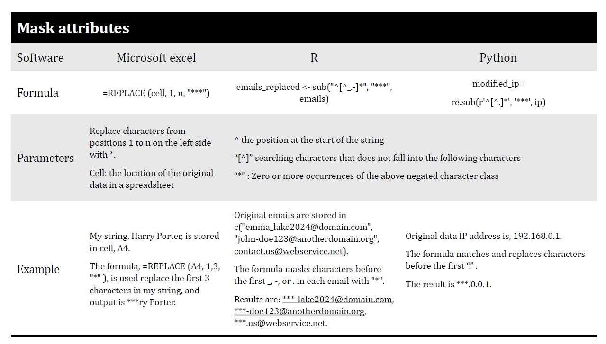

Chapter 5 Research Data Types and Pseudonymisation and Anonymisation Techniques
The pseudonymisation and anonymisation techniques vary depending on the types and nature of the data. This guide will discuss the techniques for the following types of research data: textual data, numerical data, audio and visual data, and geospatial data.
To see which techniques are most suitable for your data, it is helpful to first see what you want to anonymize. Based on the approach of UK Data services, you can follow these 3 steps to deindentify your data. Step 1. Know your data: What kind of research data type do you have? What kind of data do you want to anonymize or pseudonimyze? Do you have textual data or numerical? Or do you have interview recordings consisting of audio?
Step 2. Identify your identifiers in your data: Looking at your data, what kind of identifiers do you see? What kind of identifiers do you want to anonymize or pseudonymize? Do you have names, places, year of birth etc? Are there combinations of identifiers in your data that can identify a person? Or are there isolated incidences or unique events in your data that are easy to identify, for example a rare disease in a neighbourhood.
Step 3.
Anonymization steps | Relevant questions | Examples |
|---|---|---|
1. Know your data | For different types of idetifiers, see [Personal data](#personal_data) | What kind of data do you want to anonymize or pseudonimyze, such as textual, numertical, audio, video data? |
2. Implement anonymisation techniques | Ensure all dirct and indirect indentifers are removed | Any remaining information in the dataset still sensitive, or unique? |
3. Assess disclosure risk | Ensure all dirct and indirect indentifers are removed | Are there isolated incidences or unique events in your data that are easy to identify, for example a rare disease in a neighbourhood? |
5.1 Textual data
Textual data refers to any text-based content such as transcripts of interviews, workshops and focus group discussions, open-ended questions in surveys, observational notes, meeting notes, etc. This data type can be de-identified by generalizing the identifying information, replacing or deleting the identifiers such as research participants' names, gender, age, income, places and institutions names, addresses (physical location, email and IP), telephone numbers and any other sensitive information. The following techniques are commonly used to pseudonymise or anonymise textual data:
5.1.1 Generalisation
Generalisation involves reducing detailed information so that potentially disclosive information is replaced, aggregated or deleted.
Replace This approach mainly involves replacing or categorizing identifiers with vague descriptors, such as replacing the actual names of individuals with aliases or with other aggregated information.
Delete If the identifying information cannot be replaced or generalized, the entire variable or text may need to be deleted and explicitly marked as such by using [brackets] for example.
5.1.2 Distort
In certain cases, instead of deleting crucial information needed to understand context and content, it's possible to distort the information by changing other identifiers. For example, if you interviewed someone who participated in a high-level sports competition, and if that information is of importance in research, then you may change other values. You could change the years when the competition took place, the region (place, country) or even the gender of the person, if this is not crucial information.
Table XX below presents the most common identifiers in textual data and the suitable anonymization techniques with practical examples.


Masking Masking textual data involves replacing letters or symbols (punctuation) in identifying information entirely or partially with a special symbol (such as '*' or 'x'). It is commonly used for email addresses, names of locations, etc.
This technique is more suitable for tabular textual data, meaning that data is stored in the form of columns and/or rows.
See the table below for examples.

For more inspiration on how to anonymize textual data, please consult this illustrative example provided by CESSDA, which demonstrates the process of anonymizing an interview script.
Tools
Masking can be performed through manipulation in character data and natural language processing in R or Python. Some examples can be found in the Mask attributes section under Numerical Data in this guide.
5.2 Numerical data
Numerical data is data in the form of numbers and is often displayed in a table with rows and columns. The techniques commonly used to anonymise numerical data include:
5.2.1 Suppression
Suppression involves deleting the identifying information from the data. Some attributes (variables) or records (observations) can be removed in certain cases to make the identifier is not unique anymore.
5.2.2 Swapping
This technique is also known as shuffling and permutation.
When each data subjects has attributes which are stored in the columns in a spreadsheet, swap the attributes among two random data subjects till exhaust all data subjects in the dataset. In this way, the distribution of attributes would not be changes, while each data subject’s attributes are changed. For example, when collecting each data subject’s email address and IP address, swap each subject’s IP address would reduce the chances of identifying one data subject with their both email address and IP address.
5.2.3 Masking
The same way letters in textual data are replaced, numbers can be entirely or partially replaced with a special symbol (such as '*' or 'x').
See the table below for examples.

5.2.4 Generalisation
Generalisation techniques reduce the granularity of the attributes/records in the data. It can be performed by：
Categorising personal identifiers.* For example, age is replaced by an age category or range.
Top and bottom coding of the upper or lower ranges. Very high and low values are grouped into categories to minimize identifiability due to outliers. For example, age records above a certain upper and lower limit are classified as groups to avoid recognition of exceptionally older or younger individuals while preserving actual ages for the rest of the population within the wider group researched. A top code of “ X or more” could be applied to avoid identifying older subjects.
Collapsing and/or combining variables. Merging data recorded in two or more variables into a single category. This is particularly useful if the initial data collection creates several categories with very few subjects in each.
Perturbation can be used where small changes in value are acceptable. This technique involves rounding, adding noise, or replacing real values with simulation values. It should not be used when data accuracy is critical. The following section demonstrates examples of rounding and adding noise techniques with practical examples.
Rounding
It returns a number rounded to a base number to prevent exact matching with external data sources (https://sdcpractice.readthedocs.io/en/latest/anon_methods.html#special-case-census-data). It can be used to deal with data like age, height, weight, or house number. Examples of rounding is demonstrated with tools, Excel, R, or Python.
 Noise addition
Noise addition
This technique adds or subtracts the original values with a random number. Larger random numbers result in higher levels of noise. Note that the results of noise addition are irreversible because each modification introduces randomness to the original values.
This technique can be used to few values, such as outliers, or to entire dataset. When handling data with continuous value, the distribution of continuous data should be preserved to maintain more information in the datasets. Examples can be found in the table below.

5.3 Audio-Visual data
Audio-visual data includes various forms of multimedia content, such as videos, movies, and audio recordings, including voices and visual components. In research, these forms of data capture interviews, workshops and any other form of communication with research participants involving their voices and/or images. Anonymizing these types of data involves modifying the audio, video or images, which will be introduced in this section.
Keep in mind that these techniques can be time-consuming or expensive to use.
Keep in mind that these techniques can be time-consuming or expensive to use.
5.3.1 Voice transformation/distortion
This technique involves disguising voices such as altering the pitch in a recording. Keep in mind that transforming or distorting the voice can reduce the usefulness of the data. Therefore, the decision of modifying sounds should be made based on your research objectives.
5.3.2 Blurring, pixelation or obscuring
Blurring by pixelating specific regions of a video image or a picture, such as faces, can effectively anonymize individuals. This technique involves reducing the level of detail in those areas, making it harder to identify the person. In addition, you can also obscure the face of a person. See Image XX for an example of pixelating a face.

Simpel distortion of the audio or imagery can only prevent idetnfication based on the speaker's voice or iamge but it cannot remove other idetnfiying information that might exist in the recoding, such as speaking patterns or the mentioned personal information.
5.3.3 Mute or bleep out the identifying information
In audio or video recordings, you can also mute or bleep out identifying information to anonymize the audio-visual data. For example, you can mute or bleep out identifiers such as names, places or other information. Please see image XX below where the personal name has been muted in the audio recording.

Software for audio-visual data
• For audio data, audio editing software such as Audacity can be used to transform or distort the voice or bleep out personal information.
• Different video editing software such as Adobe Premiere can be used to blur or pixelate video recordings or transform, distort or bleep out information in the audio recording.
• For images, image editor tools such as Photoshop and Paint can be used to blur, pixelate or obscure faces or personal information in pictures and images.
• For audio data, audio editing software such as Audacity can be used to transform or distort the voice or bleep out personal information.
• Different video editing software such as Adobe Premiere can be used to blur or pixelate video recordings or transform, distort or bleep out information in the audio recording.
• For images, image editor tools such as Photoshop and Paint can be used to blur, pixelate or obscure faces or personal information in pictures and images.
5.4 Geospatial data
Geospatial data refers to data that is associated with specific geographic locations. Spatial data are used in research for analysis, visualization, and understanding of relationships and patterns within a geographic context. This section presents some of the techniques used to de-identify spatial data. The existing anonymisation techniques fall into two categories of generalization and randomization.
##Spatial generalisation
Spatial aggregation
Spatial aggregation is on the techniques commonly used to anonymise geospatial data. The method helps to mask the exact locations of individuals while still preserving the overall spatial patterns and trends. Spatiall aggregation can take two forms. The first form, which is area aggregation, involves reducing the level of detail by summarising the spatial details into larger spatial units, such as census blocks, zip codes, cities or any other administrative units. The second form is known as point aggregation and involves assigning multiple individual records to one point location. Examples include a population dot map where one dot represents 100 persons.

(#fig:geo_data)Spatial aggregation of individual cases using census enumeration units (Paul A. Zandbergen, 2014).
Spatial displacement/Adjusting Spatial Coordinates
Spatial displacement is another simplest way of anonymising data with exact spatial coordinates by displacing the coordinates in some way. The technique involves shifting spatial data points to different locations within a certain range or distance by for example, adding or subtracting a fixed or random number to both the x-axis and the y-axis.
This can preserve the spatial distribution and density of your data while making it difficult to pinpoint the exact location of each point. It involves altering data accuracy to weaken links between the data and the individuals. This would mean that a map feature, for example, a point, is displaced to a new location (d – distance) away from its original location.
Spatial displacement should be done with utmost care to ensure that the adjustments do not conflict with the spatial realities, for example by putting a house in the middle of the sea!
https://www.ncbi.nlm.nih.gov/pmc/articles/PMC2600804/
5.4.1 Attribute anonymisation
Attribute anonymisation involves deleting or modifying any attributes or variables that could identify or link to data subjects, such as names, addresses, phone numbers, or email addresses. This technique can protect the personal or confidential information of data subjects while retaining some non-identifying information for analysis.